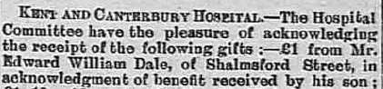
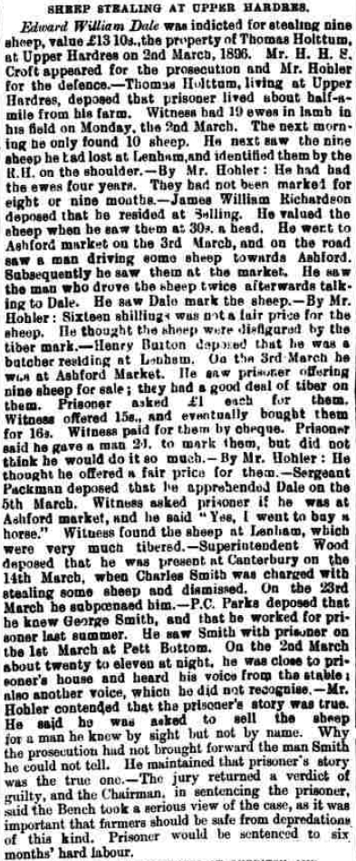
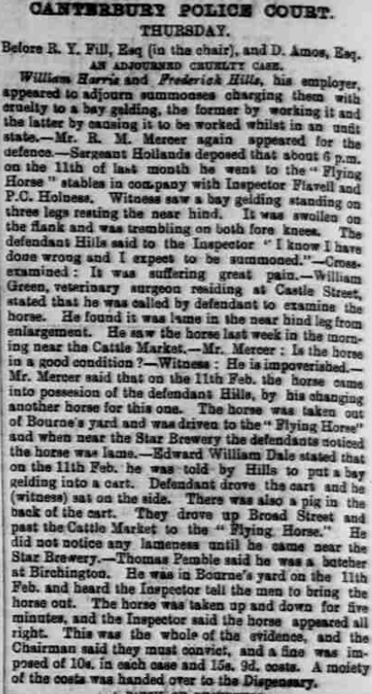
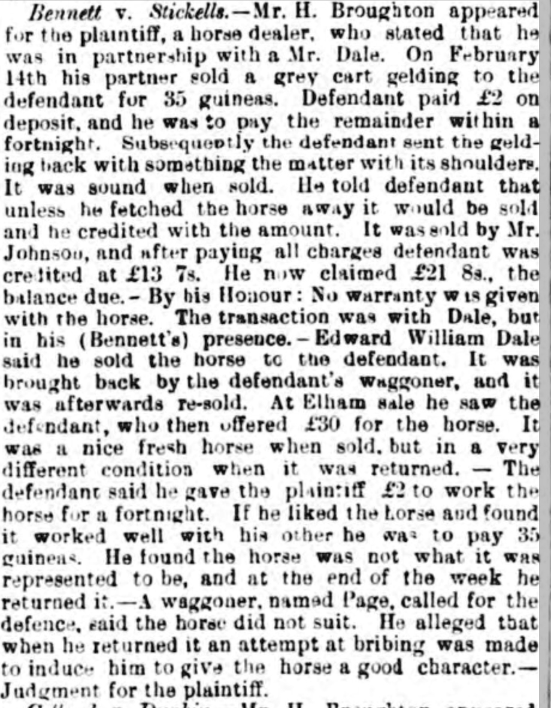
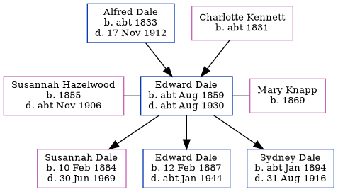

Edward William Dale cAug 1859 - c1930
[ Home ] | [ Calendar ] | [ Surnames Index ] | [ Errors ] | [ Family History ]A labourer ag and the child of Alfred Dale (an agricultural labourer) and Charlotte Kennett, Edward Dale, the first cousin three-times-removed on the father's side of Nigel Horne, was born in Chartham, Kent, England c. Aug 18591,2, was baptised there on 7 Aug 1859 was married twice - to Susannah Hazelwood (on 11 Nov 1882 in Chilham, Kent, England) Mary Knapp (c. May 1908 in Bridge, Kent, England, following the death of Susannah c. Nov 1906)4. He had 3 children with Susannah Hazelwood: Susannah Elizabeth, Edward William Alfred and Sydney.
During his life, he was living in Marshside, Kent, England on 2 Apr 18716; at London Road, Harbledown, Kent on 3 Apr 18815; at Prospect Row, Harbledown, Kent on 5 Apr 18911; and at Shalmsford Street in Chartham on 31 Mar 19017, on 1 Aug 1903 and on 2 Apr 19118 (when he was living with his).
He died c. Aug 1930 in Bridge, Kent, England3.
Parents
- Alfred was born c. 1833
- Charlotte was born c. 1831
Children
- Susannah Elizabeth was born on 10 Feb 1884
- Edward William Alfred was born on 12 Feb 1887
- Sydney was born c. Jan 1894
Citations
- 1891 England, Wales & Scotland Census - Findmypast (was age 31 and the head of the household)
- England & Wales births 1837-2006 - Findmypast
- England & Wales deaths 1837-2007 - Findmypast
- England & Wales Marriages 1837-2005 - Findmypast
- 1881 England, Wales & Scotland Census - Findmypast (was age 21 and the son of the head of the household)
- 1871 England, Wales & Scotland Census - Findmypast (was age 11 and the son of the head of the household)
- 1901 England, Wales & Scotland Census - Findmypast (was age 42 and the head of the household)
- 1911 Census for England & Wales - Findmypast (was age 51 and the head of the household)
Media
Whitstable Times and Herne Bay Herald 1 Aug 1903

Canterbury Journal, Kentish Times and Farmers' Gazette 11 Apr 1896

Canterbury Journal, Kentish Times and Farmers' Gazette 11 Apr 1896
Whitstable Times and Herne Bay Herald 11 Mar 1893

Canterbury Journal, Kentish Times and Farmers' Gazette 11 Apr 1891

1881 England, Wales & Scotland Census - GBC/1881/0004708696
1871 England, Wales & Scotland Census - GBC/1871/0014197846
England & Wales births 1837-2006 - BMD/B/1859/3/AH/000961/008
England & Wales marriages 1837-2005 - BMD/M/1882/4/AZ/000077/322
1901 England, Wales & Scotland Census - GBC/1901/0005461228
1911 Census for England & Wales - GBC/1911/RG14/04302/0143/1
England & Wales deaths 1837-2007 - BMD/D/1930/3/AZ/000180/049
England Births & Baptisms 1538-1975 - R_885421963
Kent, Canterbury Archdeaconry Baptisms - GBPRS-CANT-B-96193313
Family Tree
Map
Generated by ged2site. Last updated on Jul 3, 2024
Known Issues
Residence record for 1 Aug 1903 contains no citation
May have been living with mother on 2 Apr 1871, but the addresses don't match or aren't detailed enough to be sure
May have been living with father on 2 Apr 1871, but the addresses don't match or aren't detailed enough to be sure
Listed in the residence for 1 Aug 1903, but spouse Susannah Hazelwood is not